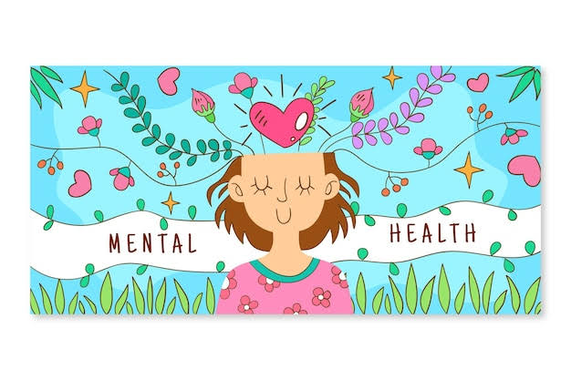

Bienestar emocional
Cuidar nuestras emociones es importante.

Convivencia escolar
Construyamos un ambiente de respeto y apoyo.
Salud mental
Expresar lo que sentimos también es importante.
“Redes de Bienestar: Tejiendo por la Salud Mental y el Éxito Escolar”

Cuidar nuestras emociones es importante.
Construyamos un ambiente de respeto y apoyo.
Expresar lo que sentimos también es importante.
En la comunidad escolar existe una preocupación por el bienestar emocional de los estudiantes. Factores como el estrés académico, la ansiedad, los problemas familiares, la presión social y la falta de espacios para expresar las emociones pueden afectar su desempeño.
Esta situación puede manifestarse mediante bajo rendimiento académico, falta de motivación, apatía, aislamiento y poca participación en las actividades escolares y comunitarias.
La salud mental es fundamental para que los estudiantes puedan desarrollarse adecuadamente en los ámbitos académico, personal y social.
Este proyecto busca promover un ambiente escolar donde los alumnos puedan expresar sus emociones, aprender estrategias para afrontar situaciones difíciles y conocer las redes de apoyo disponibles.
Promover el bienestar emocional y la salud mental de los estudiantes mediante actividades de prevención, orientación, convivencia y creación de redes de apoyo que favorezcan el éxito escolar.
| Actividad | Descripción |
|---|---|
| Campaña de salud mental | Elaborar carteles e infografías sobre bienestar emocional. |
| Buzón de bienestar | Permitir que los estudiantes expresen inquietudes y propuestas de manera anónima. |
| Taller de emociones | Realizar dinámicas para reconocer y expresar emociones. |
| Técnicas contra el estrés | Practicar respiración, relajación y organización del tiempo. |
| Red de apoyo escolar | Identificar docentes, orientadores y familiares que puedan brindar apoyo. |
| Actividades de convivencia | Realizar actividades deportivas, culturales y recreativas. |
| Mural del bienestar | Crear un mural con frases y mensajes positivos. |
| Semana | Actividad |
|---|---|
| 1 | Presentación del proyecto y encuesta inicial. |
| 2 | Campaña informativa sobre salud mental. |
| 3 | Taller de emociones y manejo del estrés. |
| 4 | Creación del mural y buzón de bienestar. |
| 5 | Actividades deportivas y de convivencia. |
| 6 | Plática de orientación y redes de apoyo. |
| 7 | Evaluación de las actividades. |
| 8 | Presentación de resultados y propuestas. |
Estudiantes, docentes, padres de familia, orientadores y profesionales especializados.
Cartulinas, hojas, marcadores, computadora, proyector, impresiones y material deportivo.
Computadoras, formularios digitales y presentaciones.
Realizar una encuesta anónima para conocer las necesidades y percepción de los estudiantes.
Registrar la participación en las actividades y recopilar opiniones y sugerencias.
Aplicar una segunda encuesta para comparar resultados y conocer qué actividades fueron más útiles.
El proyecto “Redes de Bienestar” busca que la escuela sea un espacio donde los estudiantes puedan aprender, convivir y cuidar su bienestar emocional.
La participación de toda la comunidad escolar permitirá fortalecer las redes de apoyo, mejorar la convivencia y favorecer el éxito académico.
“Cuidar nuestra salud mental también es parte de aprender y crecer.”